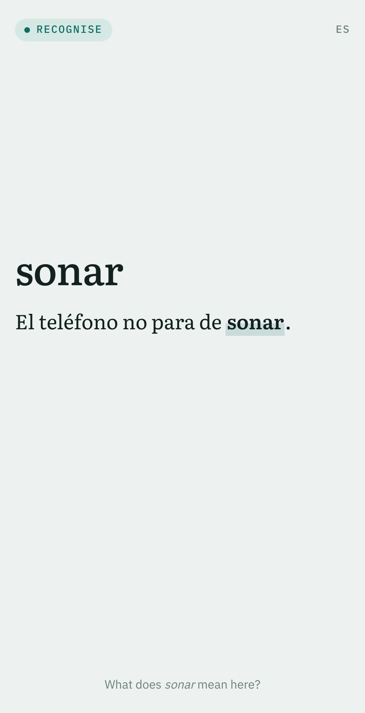
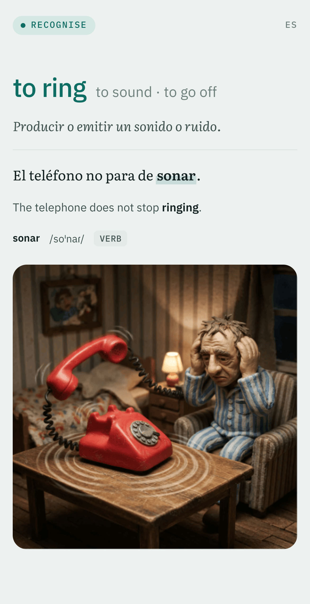

Front

Back

How the cards travel
Acervoyour entries, pictures and recordings
↓Cards out. A card for each meaning, with its sentence, picture and recordings, updated a minute after the entry changes.
↑Reviews back. Every hour, Anki's memory of each card, so the word list can show which words are hardest.
Anki sync serverAnki's own, running beside Acervo on your machine
⇄Anki syncs as it always does.
Anki on your phone or tabletwhere you review
Content goes one way and statistics the other: your review progress is never touched, and Anki never edits an entry.